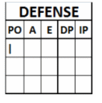
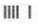
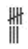
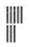
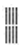

selon la « Définition des termes » du Règlement officiel du baseball (OBR) :“ Un retrait est l'un des trois retraits obligatoires d'une équipe offensive pendant son passage au bâton. Un retrait est enregistré par un cercle dans lequel sont marqués, selon la dynamique du jeu, le ou les numéros des positions des défenseurs ayant contribué au retrait et, enfin, celui du défenseur ayant effectué le retrait. Si nécessaire, ajoutez également le symbole de pointage. Les assistances et le retrait sont crédités aux joueurs concernés par des annotations dans les cases défensives du rapport de score.
Conformément à la règle 9.09(a) de l'OBR : “Le marqueur officiel doit créditer un retrait à chaque joueur qui (1) attrape une balle en vol, qu'elle soit bonne ou fausse ; (2) attrape une balle frappée ou lancée et touche une base pour retirer un frappeur ou un coureur, ou (3) touche un coureur lorsque celui-ci est hors de la base à laquelle il a droit.”
| Les retraits sont enregistrés par un trait vertical dans la colonne « PO » du tableau de défense, dans les cases des défenseurs auxquels ils sont attribués. |  |
NB: Cinq retraits sont enregistrés comme suit :
 pas comme
pas comme
 ou
ou

Huit retraits sont enregistrés comme suit :

pas comme
ou